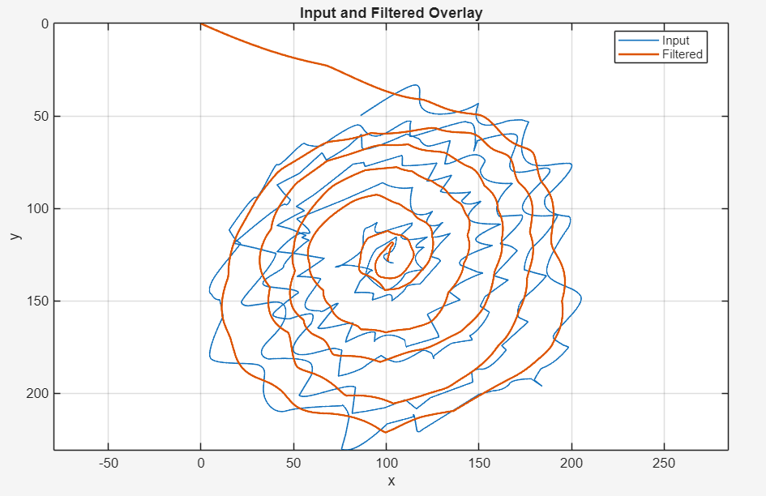
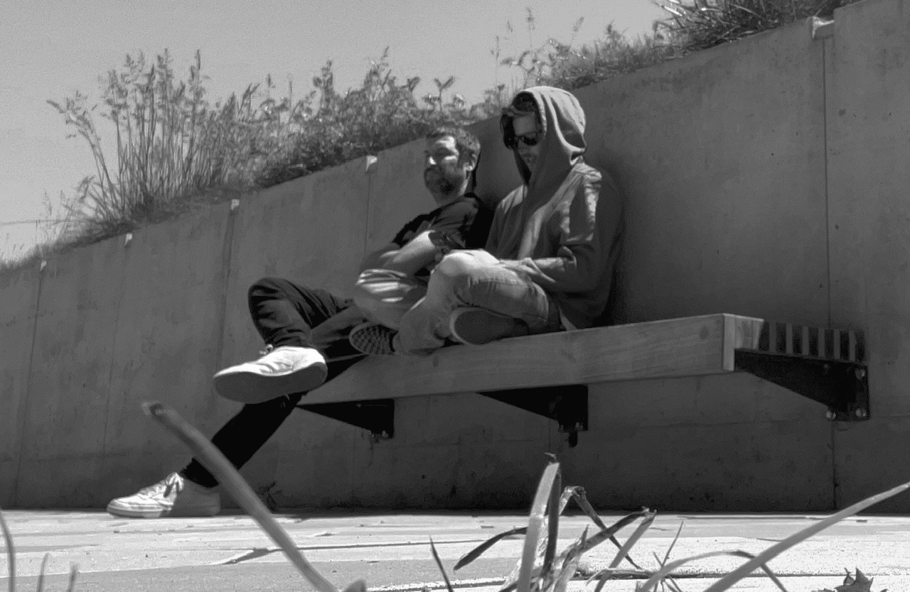
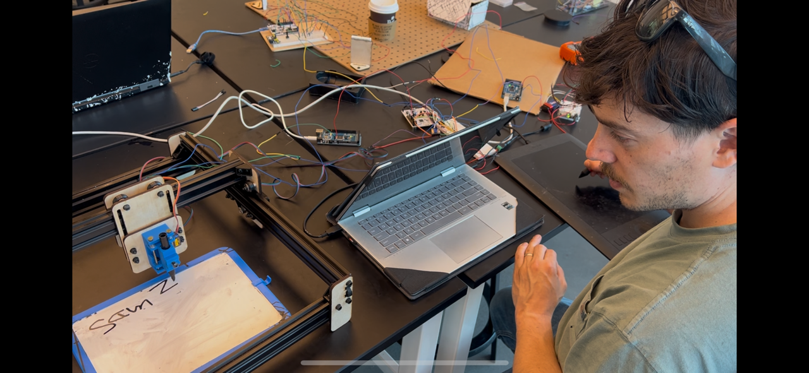
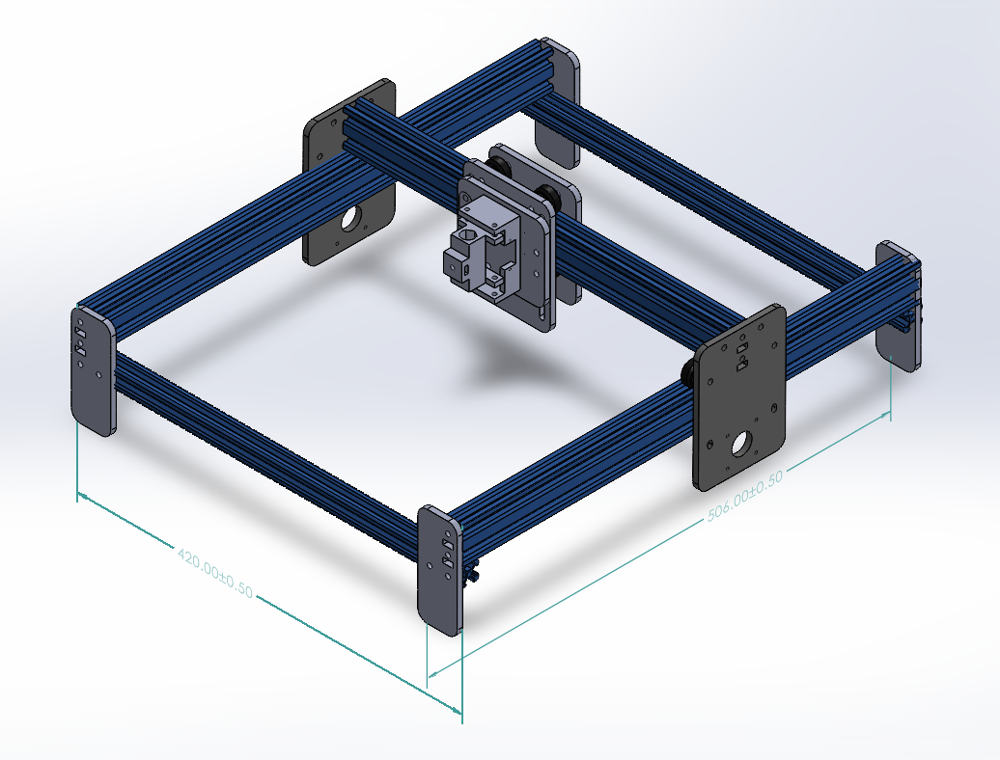
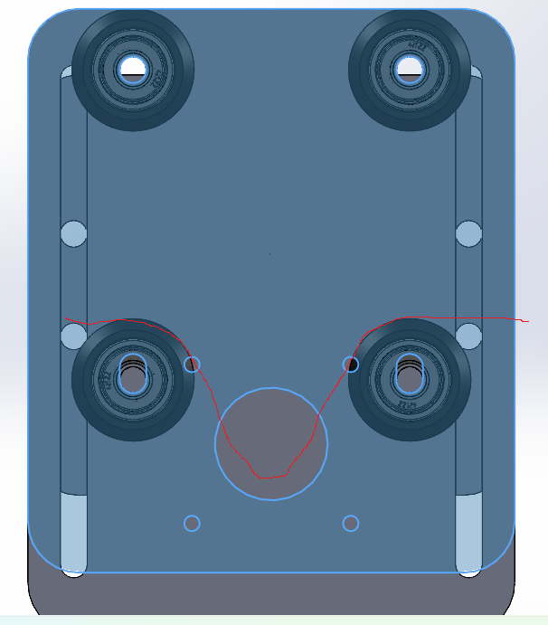
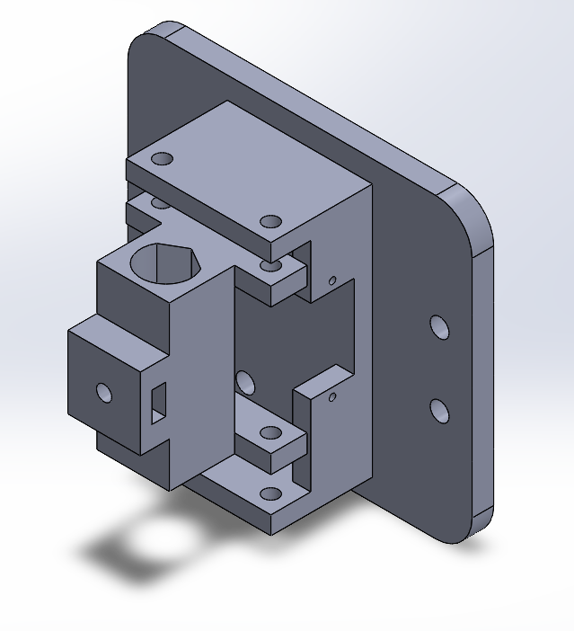
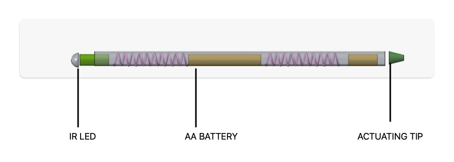
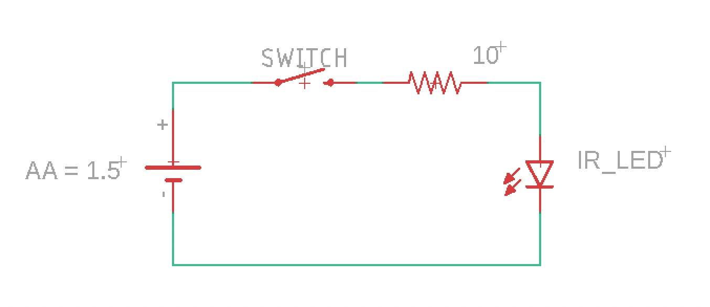
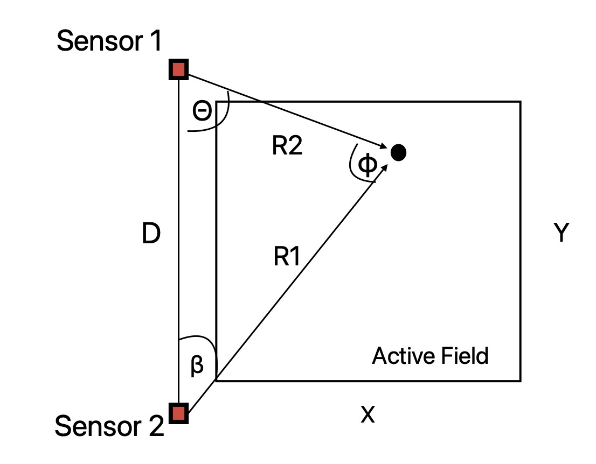
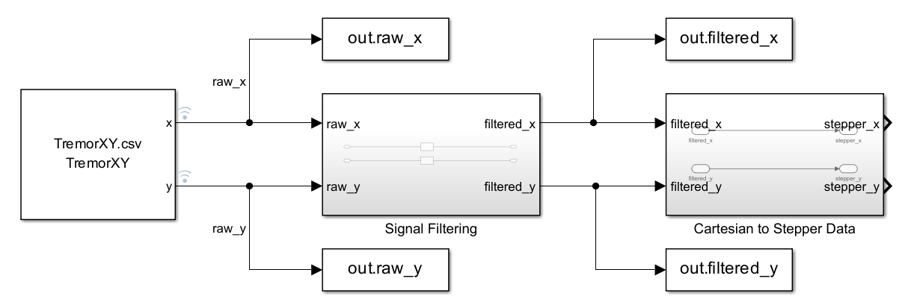

A mechatronic system that uses robotics and digital signal processing to filter out essential tremor—restoring an artist's ability to draw.
Explore the ProjectEssential Tremor affects more than 10 million people in the United States. It is characterized by a rhythmic shaking, most commonly in the hands and forearms. For people living with essential tremor, fine motor skills—like those used when drawing—are compromised. For artists, this represents a significant decline in quality of life, since the base function of self expression is undermined.
Reclaim Creative is a proposal to use a combination of robotics and digital signal processing to filter out essential tremor and allow an artist to regain their ability to draw. The system comprises three components: a stylus, a surface outfitted with position sensors, and a Cartesian-style plotting robot capable of illustrating on a 2-D surface.
The stylus is held by the artist inside a sensor zone where time-of-flight sensors triangulate its position. The triangulated signal is filtered to remove tremor content, and the cleaned signal drives the Cartesian plotter to faithfully reproduce the artist's intended motion.
The role of artistic expression to human happiness is paramount; our goal is not simply to help people live their lives, but to provide them with more access to the things that make life worth living.
Mission Statement
Raw tremor spiral (blue) vs. filtered output (orange)—the tremor is cleanly removed while preserving the artist's intended stroke.Move your cursor over the 500 × 500 mm detection surface to simulate stylus position. Watch the triangulation algorithm locate the stylus in real time and the FIR filter suppress simulated tremor.

Will is a native to the San Francisco Bay Area. In 2009, he received a bachelor’s degree in Chinese language and literature from San Francisco State University, after which he pursued a career in hospitality while traveling the world.
In 2020, Will returned to school after discovering a passion for mathematics and science. At City College of San Francisco he received an associate’s degree in Engineering, then transferred to San Francisco State University to study Electrical and Computer Engineering, where he focused on power electronics and embedded systems.
Reclaim Creative was born from a desire to assist artists whose faculties have been diminished. The mission—to provide assistive technology that makes life meaningful—reflects what Will sees as a necessary imperative for engineers. Outside of engineering, Will enjoys creating music and spending time with his family.

Sam is originally from the Los Angeles area but has lived in the San Francisco Bay Area since 2005. In 2015, he received an associate’s degree in Chemistry from Cabrillo Community College before beginning a career in the live music industry, where he has since worked across large-scale concert and festival production. He currently supervises a significant portion of the labor operations for Outside Lands Music and Arts Festival, helping coordinate the personnel and logistics required to support one of the country’s largest music festivals.
In 2023, Sam returned to school to pursue a Bachelor’s Degree in Electrical Engineering at San Francisco State University. His work has focused on embedded systems, motion control, digital signal processing, and human-centered engineering design with a particular interest in building technology that bridges technical precision with creative expression.
Reclaim Creative is an opportunity to combine those focuses into a project that can do meaningful good in the world. Countless artists throughout history have lost their ability to connect to their medium, and the team is proud to present this step toward making creative expression more accessible to those facing physical limitations.







memcpy.
They carry the already-computed Cartesian coordinates in mm,
derived from the law of cosines on the sensor MCU before transmission.